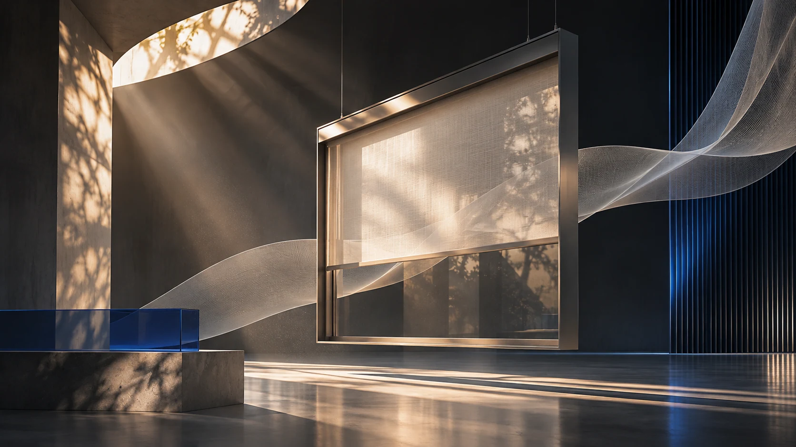
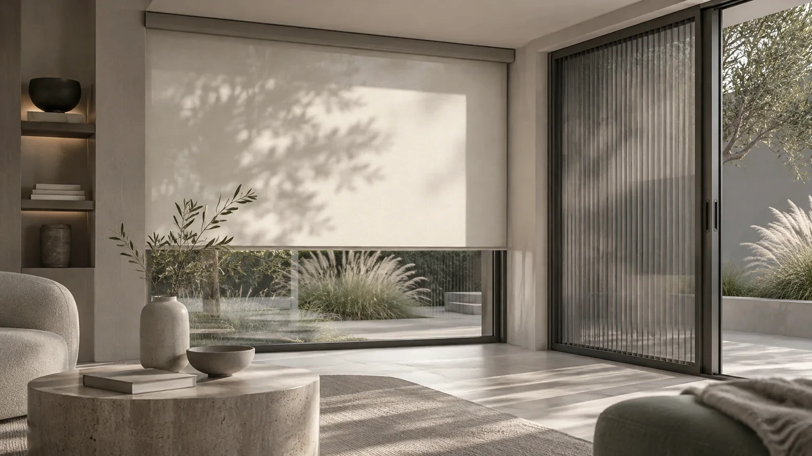
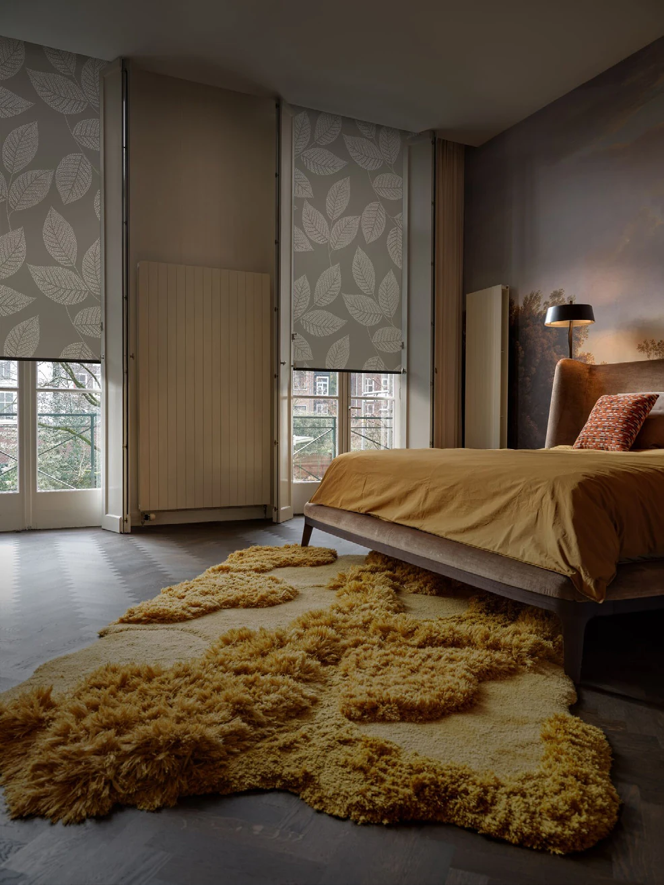
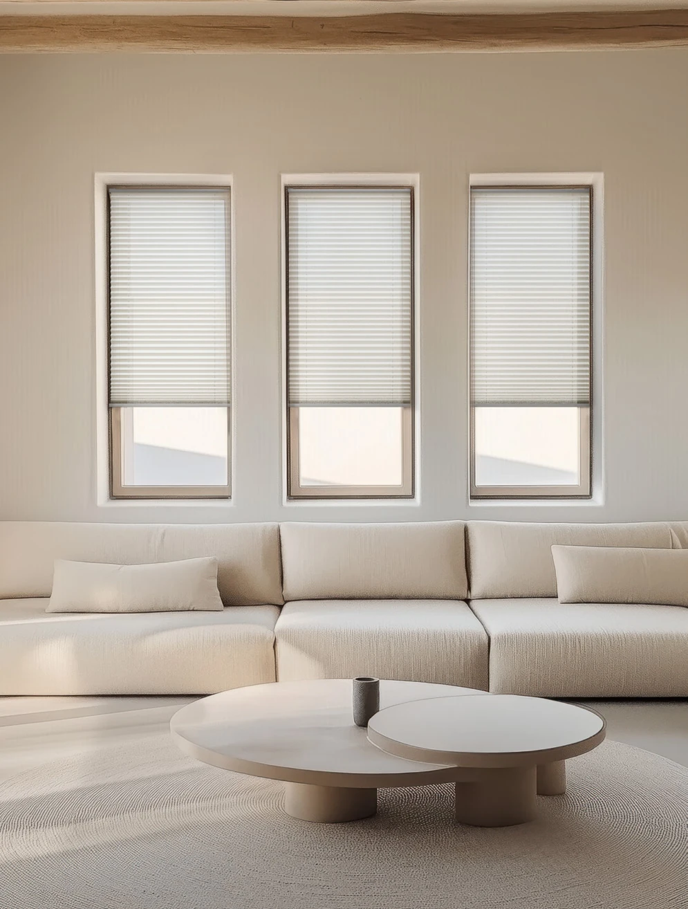
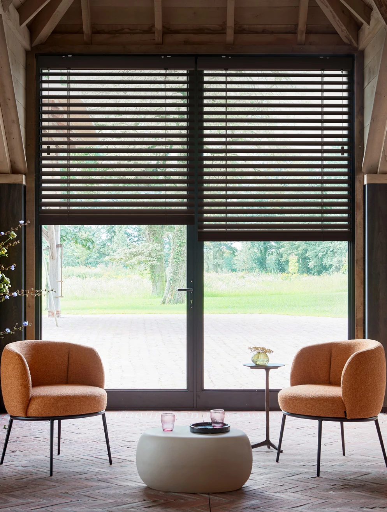
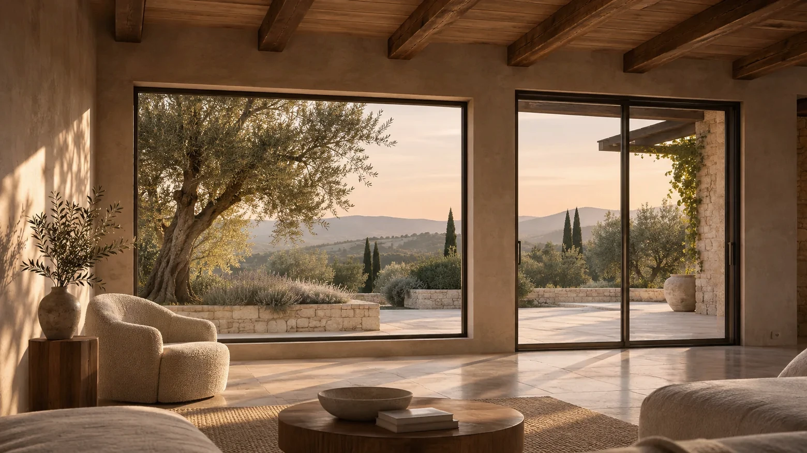

01 / The beginning
First,
the space.
A window changes everything around it. The light. The atmosphere. The way a room is experienced. Our work begins with that relationship.

A window changes everything around it. The light. The atmosphere. The way a room is experienced. Our work begins with that relationship.

Watch how one surface changes the whole atmosphere of a room.
From a complete architectural opening to the object that controls the daylight.
One system, three scales: space, construction and material.
Behind every serene interior is a system designed to perform without demanding attention.
A simple textile surface can transform the character of a window without taking over the architecture.
Explore system family ↗



Texture is never a decoration. It changes the way a material holds light, behaves in a room and meets the hand.

From soft textiles to reflective surfaces, each material brings a different character to light.
Explore the material archive Illustrative finish studyDrag or scroll to explore
The detail you rarely notice is often the detail that matters most. Components, tolerances and considered assembly make the experience whole.
Conceptual component sequence. Not a production drawing or proof of compatibility.
Different families, one visual discipline: material, light and construction working together.